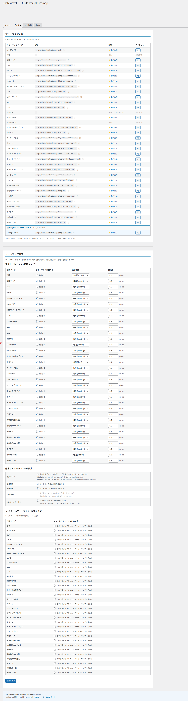

詳細設定
サイトマップ種別ごとの詳細設定、GZIP圧縮オプション、リライトルール、AJAX機能について解説します。
投稿タイプ別サイトマップ
投稿タイプ別サイトマップでは、各投稿タイプ（投稿、固定ページ、カスタム投稿タイプ）ごとに個別のサイトマップファイルを生成します。

対象投稿タイプの選択
サイトマップに含める投稿タイプを設定画面から選択できます。公開状態（publish）の投稿のみがサイトマップに含まれます。
| 設定項目 | 説明 |
|---|---|
| 投稿（post） | ブログ記事を含むサイトマップを生成します。デフォルトで有効です。 |
| 固定ページ（page） | 固定ページを含むサイトマップを生成します。デフォルトで有効です。 |
| カスタム投稿タイプ | 登録されているカスタム投稿タイプが一覧表示されます。必要なものを選択してください。 |
非公開（private）や下書き（draft）の投稿はサイトマップに含まれません。noindex指定のある投稿タイプも自動的に除外されます。
画像サイトマップ
画像サイトマップは、投稿内に埋め込まれた画像の情報をXMLサイトマップとして出力します。Google画像検索でのインデックスを促進します。
画像情報の収集
プラグインは投稿コンテンツ内の <img> タグを解析し、以下の情報をサイトマップに含めます。
- 画像URL（
image:loc） - 画像タイトル（
image:title） - alt属性から取得 - 画像キャプション（
image:caption） - キャプション情報がある場合
動画サイトマップ
動画サイトマップは、投稿内の動画コンテンツのメタデータをXMLサイトマップとして出力します。Google動画検索での認識を強化します。
対応動画形式
プラグインは投稿コンテンツ内の動画埋め込みを自動検出し、動画サイトマップに含めます。YouTube、VimeoなどのoEmbed対応プラットフォームの埋め込みに対応しています。
ニュースサイトマップ
ニュースサイトマップは、Google News向けに直近のニュース記事を含むサイトマップを生成します。
ニュースサイトマップは直近48時間以内に公開された記事のみを対象とします。Google Newsに登録されているサイトでの使用を想定しています。
| 設定項目 | 説明 |
|---|---|
| サイト名 | Google Newsに登録しているサイト名を設定します。 |
| 言語コード | ニュースの言語コード（例: ja）を設定します。 |
GZIP圧縮設定
GZIP圧縮を有効にすると、サイトマップファイルを圧縮形式（.xml.gz）で配信できます。
| 項目 | 詳細 |
|---|---|
| 圧縮率 | 通常60〜80%のファイルサイズ削減が期待できます。 |
| 互換性 | すべての主要な検索エンジン（Google、Bing）がGZIP圧縮サイトマップに対応しています。 |
| 必要条件 | サーバーのPHP環境でzlib拡張が有効であること。 |
サイトマップインデックス
サイト内のURLが50,000件を超える場合、プラグインは自動的にサイトマップインデックスファイルを生成し、各サイトマップファイルを50,000件ずつに分割します。
プラグインが対象URL数をカウントし、50,000件を超えるか判定します。
50,000件を超える場合、サイトマップインデックスファイル（sitemap-index.xml）を生成します。
各分割サイトマップ（sitemap-post-1.xml、sitemap-post-2.xml 等）がインデックスファイルから参照されます。
AJAX機能
管理画面では、AJAXを利用してサイトマップの手動再生成をバックグラウンドで実行できます。大量のコンテンツがある場合でも、管理画面の操作がブロックされることなく処理が完了します。
サイトマップの生成状況は管理画面からリアルタイムで確認できます。生成完了後、各サイトマップのURL数とファイルサイズが表示されます。
wp_head出力
プラグインは wp_head アクションフックを利用して、HTMLの <head> セクションにサイトマップへのリンクを自動出力します。
<link rel="sitemap" type="application/xml" title="Sitemap" href="https://example.com/sitemap.xml" />この出力により、検索エンジンがHTMLページからサイトマップを自動的に発見できるようになります。robots.txtへのサイトマップURL記載と併用することが推奨されます。